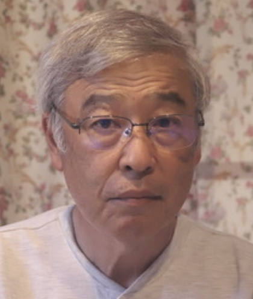
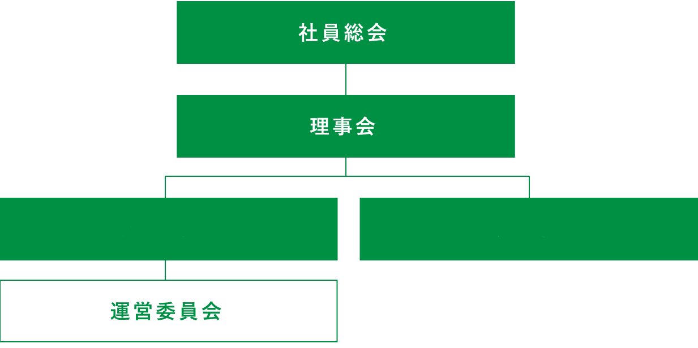

臓器移植で救えるいのちがあります。
臓器提供者（ドナー）への、一生忘れない感謝の気持ちがあります。
移植医療の過程には、切っても切り離すことできない家族の絆があります。
私たちグリーンリボン推進協会は、一人でも多くのいのちを救うため
臓器移植がもっと当たり前に受けられる医療になることを願い、活動しています。
現在日本で臓器移植を希望している人は、およそ14,000人。
そのうち、臓器移植を受けられる人は、年間およそ400人。
臓器移植を待ちながら亡くなっていく人も、少なくありません。
皆さんは「臓器移植」、「臓器提供」についてどのくらい知っているでしょうか？
また「臓器提供意思表示」についてご家族と話し合ったことはありますか？
まずは、知ってください。
そして、考えてみてください。
臓器提供へのこたえが “Yes”でも“No”でも構いません。
それでも、一人でも多くの “Yes”が増える未来を願って、
私たちは活動し続けます。
あなたと、あなたの大切な人のいのちを、
あきらめなくていい未来のために。
理事長ご挨拶
NPO法人グリーンリボン推進協会は、我が国において臓器移植、臓器提供の理解を広めることにより、一人でも多くのいのちを救うとともに、臓器を提供した人とその家族が称えら、尊敬される社会づくりを目指し、移植医療関係者や市民が中心となり結成した移植医療の普及啓発のための市民ボランティア団体です。2016年11月には大阪府から特定非営利活動法人として認証を受けました。
我が国の臓器移植は、欧米諸国とほぼ同じ時期に始まりましたが、その後の道のりは厳しいものでした。1997年に臓器移植法が施行されましたが脳死下臓器提供は毎年数例に留まり、漸く臓器移植法改正案が2010年7月16日に全面施行され脳死下臓器提供が大きく前進すると期待されましたが、思ったほどは増加しませんでした。そして新型コロナウイルスが感染拡大した2020年からは大幅に減少しまいました。漸く2023年5月に新型コロナウイルスが感染症５類型移行にともない、2023年は脳死下臓器提供が１３２例（前年比３９例増）、心停止下が１８件（前年比３例増）と一昨年より大幅に増加し総数で初めて１５０例を超えました。ただコロナ以前の２０１９年に比べると約２割増で約１６４００人の待機者に比べるとまだまだ少なく、当協会が目指す移植を希望するすべての人が移植を受けることができる社会の実現には程遠い状況にあります。 このような状況では、ますます社会に臓器移植、臓器提供への理解を広める活動が重要となっています。当協会は、臓器移植が進むにつれ忘れがちとなるドナーとそのご家族への感謝と尊敬の気持ちを社会に伝える活動とともに臓器移植の普及啓発活動を続けていきます。
当協会は臓器移植の一般市民に対する普及啓発活動として例年様々な活動を行ってきました。新型コロナウイルスが感染拡大中も活動の実施及び内容を大幅に見直し、広島でのイベントは新型コロナウイルス感染症対策を施した上で開催し、新しい試みとしてWEBでの同時配信を行いました。またメディアワークショップをWEBオンラインで開催しました。
2024年度は以前同様に広島市でのグリーンリボンフェス、東京銀座での臓器移植推進グリーンリボンパレード、移植医療勉強会「みんなで学ぼうグリーンリボン」、メディアワークショップなどの活動を行います。また新しい形の臓器移植の普及啓発活動を今後も患者団体、関連医学会、移植関係団体と連携、協力し、積極的な臓器移植の普及啓発活動を目指します。そしてより一層、市民の方々へ臓器移植、臓器提供への理解の浸透を図り、活動への参加を呼びかけていきます。引き続き市民のみな様のご協力をお願い致します。
特定非営利活動法人グリーンリボン推進協会 理事長
大久保 通方
法人概要
- 名称
- NPO法人 グリーンリボン推進協会
- 住所
-
- 本部事務所
- 〒562-0001 大阪府箕面市箕面４丁目15-30Google map
- 関東事務所
- 〒245-0021 神奈川県横浜市泉区下和泉３丁目4-31 Google map
- 広島事務所
- 〒734-0007 広島県広島市南区皆実町１丁目13-34-305Google map
- 連絡先（本部事務所）
-
TEL/FAX：072-720-7180
E-mail：thanks@greenribbonac.com
※ひろしまグリーンリボンフェス、みんなで学ぼうグリーンリボンについてのお問い合わせは、下記広島支部専用メールアドレスまでお願いします。
hiroshima@greenribbonac.com - 役員構成
-
- 理事長
- 大久保 通方
- 副理事長 関東支部長
- 藤森 純一
- 監事
- 竹内 公一
- 理事
- 福嶌 教偉
- 理事
- 加藤 治
- 理事
- 中井 真一
- 理事
- 斎藤 幸枝
- 理事
- 吉開 俊一
- 理事
- 森原 ゆう子
- 理事 広島支部副支部長
- 山田 淳志
- 理事 広島支部広報
- 原田 泰輔


- 組織図
- 
- 開示情報
-